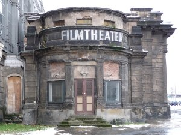
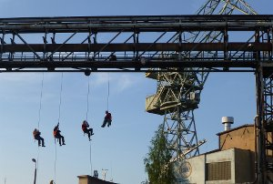

Book & film
cora piantoni
Website of Cora Piantoni
Cora Piantonis * in Munich, and lives and works in Munich and Zurich. The artist works with photography, installations and video, as well as organizing art projects herself, like the Event Horizon exhibition, Ausstellungsraum Klingental, Basel (2009). Recent exhibitions include: 2016 – Abriss. Wir haben viel erlebt, Kunstraum, München; 2015 – Europa. Die Zukunft der Geschichte, Kunsthaus, Zürich; Streuflüsse, Haus der Künste, Brno; Quem Conta Um Conto Acresenta Um Ponto. If You Tell A Story You Add More, Mira Forum, Porto; 2014 – Werk- und Atelierstipendien der Stadt Zürich 2014, Helmhaus, Zürich; 2103 – Visions of Labour, Kunsthalle Sao Paulo; Till tomorrow! Ideologies of city planning and the tactics of dwelling, WYSPA Institute of Art, Gdansk; 2012 – Reality Manifestos, or Can Dialectics Break Bricks?, Kunsthalle Exnergasse, Wien; Expedition of Slowness, Quartair, Den Haag.
saturday 7 oct 15.00 uhr werkstattkino
We Were Cinema

2010-201615 min – German
B+DOP+E+S: Cora Piantoni
AT THE HEIGHTS OF POLITICS

201311 min – Polish
B+DOP+E+T: Cora Piantoni
The industrial climbing cooperative
Świetlik was developed from the Solidarność movement in 1980 in
Gdansk. Świetlik was a community of dissidents working in
factories throughout Poland under somewhat dangerous conditions.
They strongly supported the opposition, by distributing leaflets
amongst the factory workers and by hanging banners with political
statements on high-rise buildings.
The film shows a re-enactmentof a typical working situation in an
industrial setting. In excerpts of interviews, which form the
audio part of the installation, former Świetlik members are
talking about their experiences within the company, their support
of the opposition, the blending of their private and professional
life and how the past experiences form the basis for their current
participation in society and politics in Poland.
SONGS OF WORKS

11 min – Portuguese
B+DOP+E+S: Cora Piantoni
I usually develop my films on the
basis of interviews together with moving images and re-enactments
of past events. For an exhibition at the stonemason’s cooperative
in Porto, I continued to research about worker‘s communities,
focusing on the worker‘s traditional songs and the sound of the
working process. Do the traditional songs still exist which
reflect the monotony of the work, but also help to perform it? In
what other way sound / rhythm / music plays a role at work?
Besides the masons, I was interested in the background and culture
of the students of the school which is now located in the building
of the cooperative. I connected the young generation of the
students with the older generation of the masons who are working
at the factory and are aware of the history.
Radio GAP. The Interfences

15 min – Italian
B+DOP+E+S: Cora Piantoni
The group 22 Ottobre or Terzo Radio GAP was founded in October 1969 in Genoa, the city with very strong resistance by partisans against the German occupation during World War II. Radio GAP was the first group taking part at the armed struggle ‚lotta armata’ (armed struggle). The name ‚Gruppi d’Azione Partigiana’ refers to the history of the partisans and at the same time uses a contemporary medium of communication: the television. Other groups such as the Brigate Rosse informed about their actions with leaflets. Radio GAP directly brought the information to the public, in their livingrooms. After the news, during the advertising, their messages interrupted the programme’s sound. They choose a strategy of propaganda similar to an artistic action, a communication guerrilla, as in the Situationist movement happening at the same time in Paris.